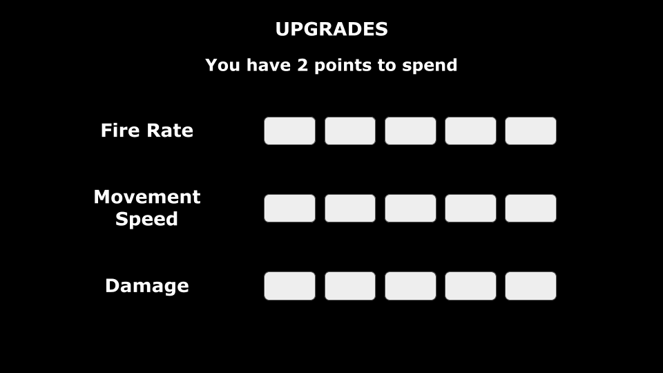
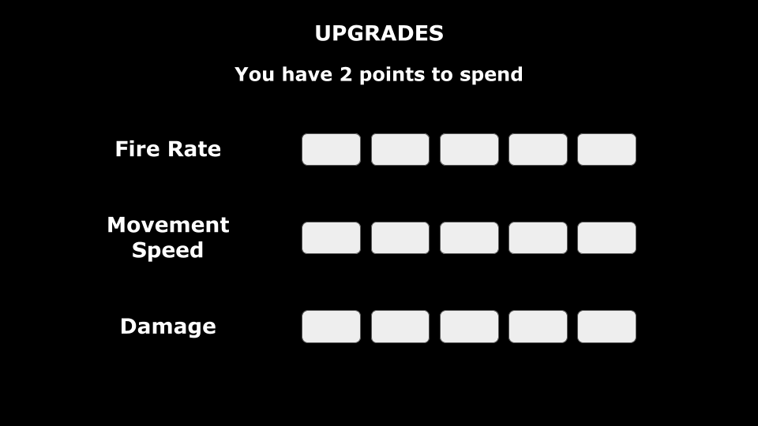
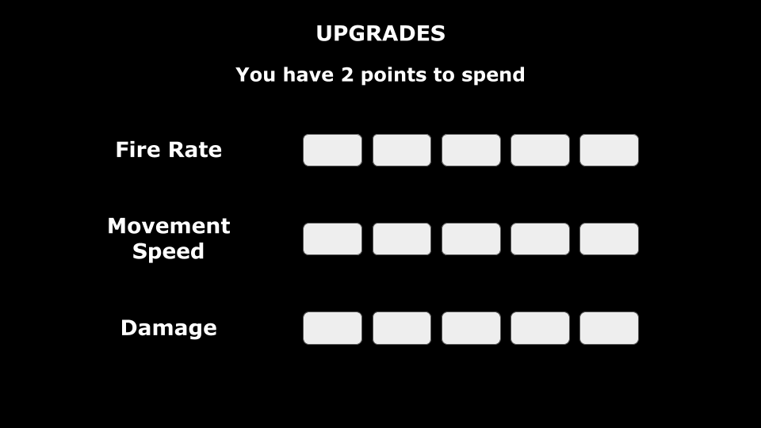

The Earth is in danger and it's up to you to protect the planet. You control a satellite equipped with weapons to protect the Earth from incoming projectiles. Orbit the planet, upgrade your weapons, and protect the Earth till the bitter end.
Protect the Planet is a tower defense game. This version will be a desktop web game but could potentially work on mobile if I made the necessary changes to the layout of certain parts. There will be a very simple story of you being tasked with controlling the defense system that keeps the Earth protected from planetary threats. Aesthetically, I will attempt to give the game a sci-fi feel, potentially in a pixelated art style.
During gameplay, the player will be able to control a ship that orbits around the Earth, using the left and right arrow keys to move and the spacebar to shoot. In between rounds, the player will have access to an upgrades menu that they will be able to spend points in. The Earth will have a certain amount of health that is depleted each time the planet is hit by a projectile. Once the planet's health reaches zero, it's game over. There will be an instructions screen right after the start screen for the player to use.

For this project, I'll be using Kenney Assets to start off for art in the game and if I have time, I may attempt to make my own art. This is definitely something I would do if I came back to the game later and I would also work on formatting a mobile version of the game as I would need to change the controls as well as the layouts of some menus.
Name: Omar Grant
Major: Game Design and Development 24'
Skillsets: C#, HTML, CSS, JS Programming